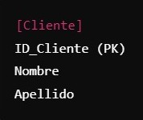
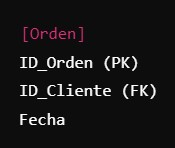

Una clave primaria es un campo (o conjunto de campos) en una tabla que se utiliza para identificar de manera única cada registro de esa tabla. No puede contener valores nulos y debe ser único para cada fila. Por ejemplo, en una tabla de "Clientes", el campo "ID_Cliente" podría ser la clave primaria, asegurando que cada cliente tenga un identificador único.

Clave Extranjera (FK)
Una clave extranjera es un campo (o conjunto de campos) en una tabla que establece una relación con la clave primaria de otra tabla. Se utiliza para vincular registros entre dos tablas, permitiendo mantener la integridad referencial. Por ejemplo, si tienes una tabla de "Órdenes" que incluye un campo "ID_Cliente", este campo puede ser una clave extranjera que se relaciona con la clave primaria "ID_Cliente" de la tabla "Clientes". Esto asegura que cada orden esté asociada a un cliente existente.

Clave Candidata (UQ, UC or UK)
Una clave candidata es un campo (o conjunto de campos) que puede ser utilizado como una clave primaria, ya que es único y no nulo. Una tabla puede tener múltiples claves candidatas, pero solo una de ellas se selecciona como clave primaria. Por ejemplo, en una tabla de "Usuarios", tanto el campo "Correo Electrónico" como "ID_Usuario" pueden ser claves candidatas si ambos son únicos. La clave primaria se elegirá entre estas claves candidatas.